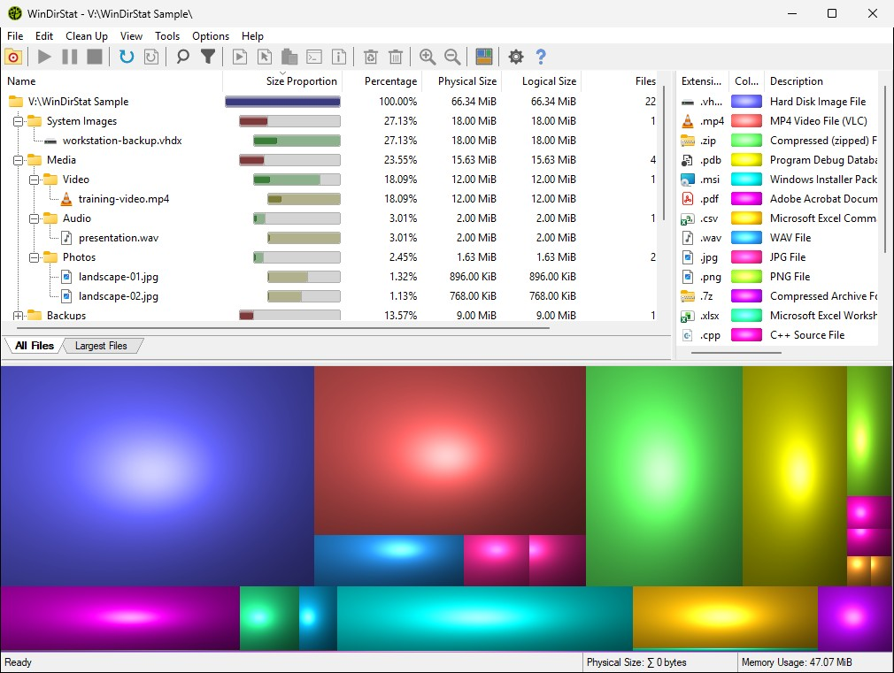

|
WinDirStat is a free, open-source disk usage analyzer and cleanup assistant for
Microsoft Windows. Scan a drive or folder to see what is using space and reclaim it.
Download WinDirStat
Explore, understand, and clean up
- Scan quickly. Analyze whole drives or individual folders, with multithreaded and direct
NTFS scanning where available.
- See where space goes. Explore sortable views, extension statistics, Largest Files, and
an interactive treemap.
- Find what matters. Search and filter results, compare logical and physical sizes, and
detect duplicate files by content.
- Analyze in depth. Inspect permissions and storage tiers, estimate costs, and identify
optimization opportunities.
- Clean up confidently. Open, move, or delete items and launch Windows maintenance tools
directly from WinDirStat.
- Fit your workflow. Watch file-system changes, save or export scans, and use dark mode,
configurable layouts, portable settings, and Explorer integration.

In the treemap, each rectangle represents a file. Area shows size, color shows file
type, and nesting shows the folder structure.
|